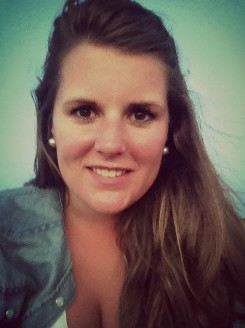

Etudiante en marketing et communication
Actuellement étudiante en première année de Master Marketing à l'Ecole Universitaire de Management - IAE de Clermont-Ferrand, mon parcours s'oriente vers le marketing et plus particulièrement vers le domaine de la communication avec l'objectif de poursuivre mes études en deuxième année de master Marketing et Communication Commerciale.
A propos de moi
Bénédicte RUIZ 493 chemin Larretcha 64990 Mouguerre 06 09 51 23 77 ruiz.benedicte@gmail.com
Etudiante dynamique et polyvalente, je souhaite enrichir mes expérience et mettre en pratique mes connaissances développées lors de mon parcours universitaire
Stage de 3mois - Conception et mise en place de stratégies de communication
Mak2com, Agence-conseil en communication
L’agence mak2com, agence conseil en communication est spécialisée dans la communication globale, le conseil stratégique, le design graphique et le développement multimédia. Cette agence multispecialiste, développe une vision 360° en accompagnant ses clients dans des stratégies globales, de l’analyse de la problématique jusqu’à la mise en œuvre opérationnelle.
Stage de 2mois - Service Marketing : Assistante responsable Marketing
Aide au développement à l'international
Développement de la notoriété en France
Ccusi, entreprise espagnole dans le secteur de la bijouterie de luxe - Irun, Espagne
En 2006, Ccusi est créée en Espagne avec un nouveau concept de bijoux : design moderne, inspiré des élements de la nature, travaillé avec de l’argent et des matériaux traditionnels Inca. Présente en Espagne, Ccusi souhaite développer son réseaux de points de vente vers les pays d’Amérique Latine comme le Pérou, le Mexique, le Chili, etc. mais aussi vers l’Europe avec l’Allemagne, l’Italie et la France.
Mc Donald's, Anglet - Equipière polyvalente
Prise de commande, préparation de commande, encaissement client.
Elior Nettoyage et Services, Villefranque
Entretien bureaux et sanitaires
BNP Paribas, Biarritz - Auxiliaire de vacances
Accueil et conseil client
Carrefour, Anglet
Vente assistée au rayon épicerie
Master 1 Marketing
Ecole Universitaire de Management - IAE Clermont-Ferrand, 63, France
L’école universitaire de Management associe l’excellence universitaire aux atours des grandes écoles (internationalisation, professionnalisation et insertion profesionnelle), en proposant des masters adaptés aux réalités du monde professionnel. Le Master Marketing a pour objectif d’acquérir les bases du marketing stratégique et opérationnel afin d’approfondir, en deuxième année de Master Marketing et Communication Commerciale, sur les techniques de la communication interne et externe, les différents supports médias et hors médias, etc.
Licence Economie et Gestion parcours Management International
Université de Pau et des Pays de l'Adour - Bayonne, 64, France
Première et deuxième année de Licence Economie et Gestion
UPPA- Bayonne, 64, France
En combinant des apprentissages théoriques et méthodologiques, cette licence permet aux étudiants d’acquérir une formation en économie et en gestion, ainsi qu’en mathématiques et statistiques appliqués. Axée sur les langues et valorisée par des matières optionnelles comme le marketing et le droit, elle permet la formation d’étudiants aux profils différenciés, plus adaptés aux demandes spécifiques du marché du travail.
Bac économique et social option Espagnol renforcé
Lycée René Cassin - Bayonne